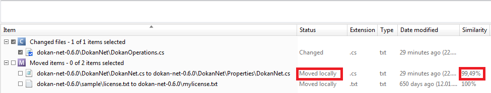

What if now we decide to move one of the files we modified before? Will Plastic be able to detect it?
We are going to move ‘dokan-net-0.6.0\DokanNet\DokanNet.cs’ to the ‘dokan-net-0.6.0\DokanNet\Properties’ directory. In order to do that we just open a Windows Explorer and move the file. And here his how “Pending changes” view will look like:

Figure 1: Move a modified file
It’s explains the move you just performed: